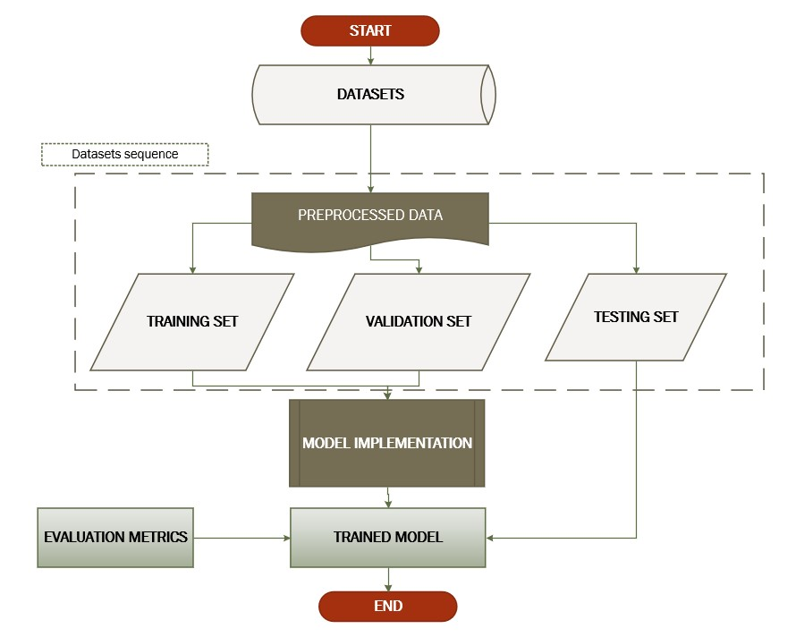

Predicting long-term deposit customers using convolutional neural network and data conversion technique.
Adebayo Abdulganiyu KEJI* || Oluwafemi FAKEYE || Nneka N. ONOCHIE || Olumide SANGOTOKI1
ACCEPTED FOR PUBLICATION
Book of Abstract
Abstract
The banking industry is the foundation of any nation's economy, and bank deposits are its primary source of profitability. Bank deposits play a significant role in determining a nation's saving rate. Globalization has resulted in substantial technological changes, business strategy, and customer service across many industries, including the financial services sector. Globalization has had a massive impact on the banking industry, revolutionizing how it provides cutting-edge technology. This study proposes a deep learning model using Residual Network architectural design and transfer learning on a Portuguese banking institution containing 40,811 training data, with 36,202 belonging to label 0 and 4639 belonging to label 1. Clearly, this shows a significant level of bias between the two labels. Hence, a SMOTE method of class balancing was applied. This dataset, in comma-separated value (CSV), was converted into images coupled with the weight transfer from the residual network trained on ImageNet; our fully connected layer was built and trained with the image files. The highest performance reached by the conventional machine learning models, Random Forest (RF), is 90.78% for accuracy, 59.37% precision, 96.78% recall, and 85.28% F1 score, tested on 412 test samples. However, our proposed methodology achieves an outstanding result with an accuracy of 93.00%, 97.00% precision, 90.00% recall, 93.00% F1 score, and 94.00% ROC, with test samples of size 5601.
Methodology
The techniques and tools utilized in this study are covered in this section, including data gathering and analysis, implementation, evaluation measures, and a general overview of software development as it relates to the study
Conclusion
In this study, we developed a deep learning model using RESNET architectural design and transfer learning on a Portuguese banking institution that initially contained 40,811 training data, with 36,202 belonging to label 0 and 4639 belonging to label 1. Clearly, this shows a significant level of bias between the two labels. However, a SMOTE method of class balancing was applied to make both labels have the same number of samples. Moving forward, this dataset in comma-separated value (CSV) was converted to images to allow us to conveniently apply a deep neural network to extract the notable features in the images. Thus, with weight transfer from the residual network trained on ImageNet, our fully connected layer was built and trained with the image files. We, therefore, evaluate our proposed model using notable evaluation metrics like accuracy, receiver operating cure, precision, F1 score and recall. Our Residual Network (ResNet) achieves the best result with an accuracy of 93.00%, 97.00% precision, 90.00% recall, 93.00%, F1 score, and 94.00% ROC with a test sample of size 5601 for model evaluation.